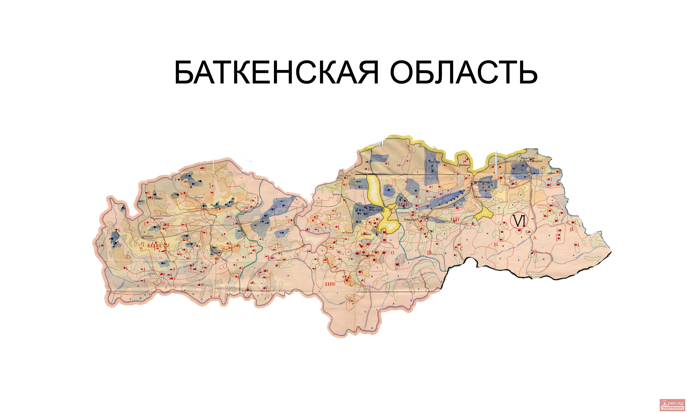
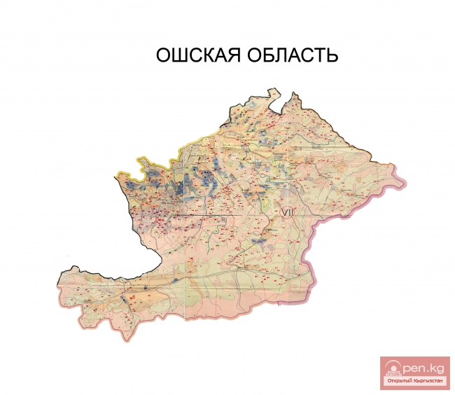
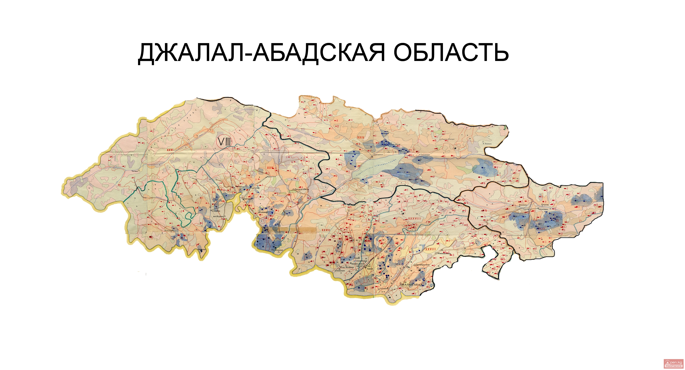
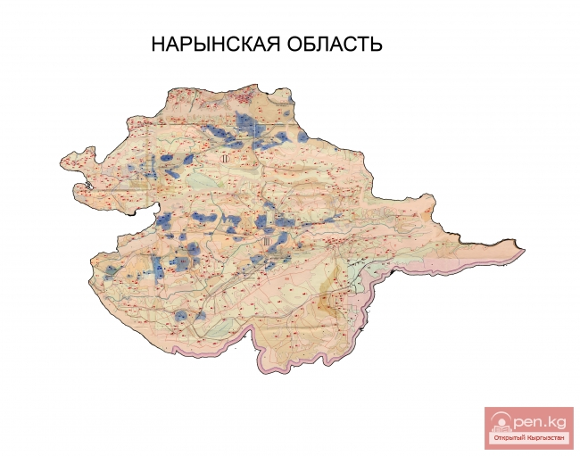
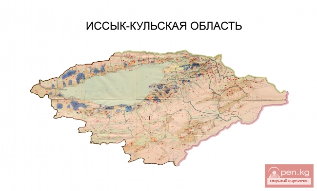
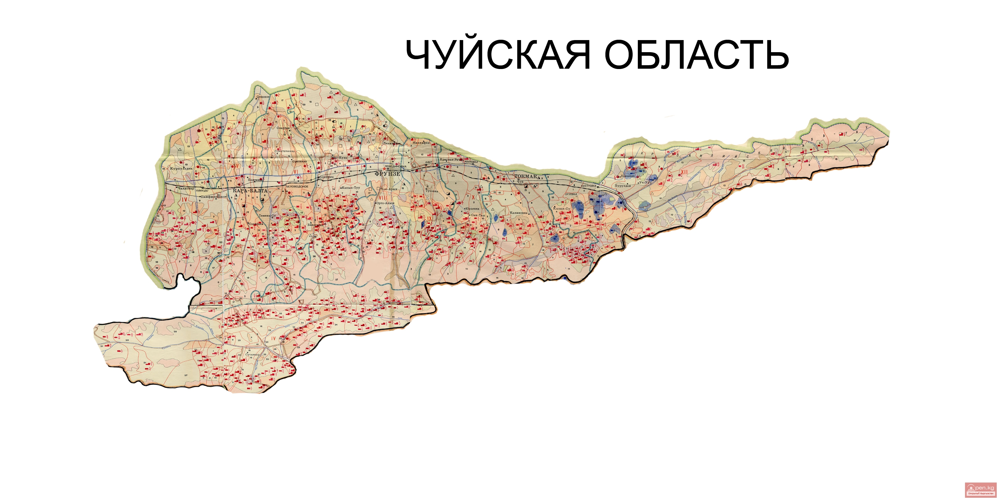

Интерактивная карта Кыргызстана
Выберите область на карте
Нажмите на любую область Кыргызстана, чтобы узнать об обрядах и традициях региона.
Баткенская область
Батке́нская о́бласть (кирг. Баткен облусу) — область в Кыргызстане. Административный центр области — Баткен. На востоке она граничит с Ошской областью, на юге, западе и севере — с Таджикистаном, а на северо-востоке — с Узбекистаном. Северная часть области является частью плоской, сельскохозяйственной Ферганской долины. Земля поднимается к югу до гор на южной границе: Алайские горы на востоке и Туркестанский хребет на западе.
Население региона, согласно переписи 2023 года, составило 570 900 человек. Из них 24,2 процента проживали в четырёх городах региона и пяти поселках городского типа, а 75,8 процента — в сельской местности. Большинство (76,5 %) населения региона составляют киргизы; есть также узбеки (14,7 %) и таджики (6,9 %), а также немного русских (0,8 %), татар (0,4 %) и турок (0,2 %).
Баткенская область была создана 12 октября 1999 года из самого западного участка Ошской области.

Ошская область
Ош (кирг. Ош) — один из крупнейших городов Кыргызстана, город республиканского значения, административный центр Ошской области, неформально именуемый «южной столицей». Расположен на юге страны, в предгорьях Алайского хребта, в долине реки Ак-Буура. Является вторым по численности населения городом Кыргызстана после Бишкека и важным экономическим, культурным и транспортным узлом региона.
Ош — один из древнейших городов Центральная Азия с историей, насчитывающей более 3 тысяч лет. Город знаменит своей архитектурой, базарами, национальной кухней, а также уникальным природным памятником — священной горой Сулайман-Тоо, включённой в список объектов Всемирного наследия ЮНЕСКО.

Джалал-Абадская область
Джала́л-Аба́дская о́бласть (кирг. Жалал-Абад облусу; также Жалалабатская, Жалал-Абадская) — одна из административно-территориальных единиц Кыргызской Республики, расположенная на юго-западе страны. Образована Указом Президиума Верховного Совета СССР от 21 ноября 1939 года. Административный центр области — город Джалал-Абад. В 2002 году переименован в Жалалабат согласно принятой Жогорку Кенешем Киргизии «Новой редакции орфографии кыргызского языка» от 28 июня 2002 года (Постановление за № 830-11 от 28.06.2002 г.). В июне 2008 года переименован обратно в Джалал-Абад, согласно постановлению Правительства Кыргызской Республики № 567 от 26 июня 2008 года, утвердившего новую редакцию «Правил правописания кыргызского языка», о восстановлении написания населённых пунктов страны через дефис.
Население — 1 238 800 человек (2023). В этнокультурном и экономическом плане регион, вместе с соседними Ошской и Баткенской областями, является частью Южного Кыргызстана. Вторая по количеству населения (1 238 800 чел. на 2016 г.) и третья по площади (33 700 км².) область республики. На территории области расположены все основные электрогенерирующие мощности страны.

Нарынская область
Нары́нская область (кирг. Нарын облусу) находится в центральной части Кыргызстана. Занимает долины и склоны гор Внутреннего Тянь-Шаня и является самым крупным регионом в стране.

Иссык-Кульская область
Иссык-Ку́льская о́бласть (кирг. Ысык-Көл облусу) — самый восточный регион Кыргызстана. Административный центр — город Каракол. Образована Указом Президиума Верховного Совета СССР от 21 ноября 1939 года с центром в городе Пржевальск (в область был преобразован Иссык-Кульский округ). 27 января 1959 года упразднена[3]. Вновь создана 11 декабря 1970 года; в июле 1989—1991 году областной центр находился в городе Иссык-Куль, в 1991 году вернулся в Пржевальск (в 1991 переименован в Каракол).
Область берёт свое название от озера Иссык-Куль («тёплое озеро»[4]), второго по величине солёного озера в мире, которое никогда не замерзает, несмотря на свою высоту в горах Тянь-Шаня.
Её окружают Алматинская область, Казахстан (север), Чуйская область (запад), Нарынская область (юго-запад) и Синьцзян, Китай (юго-восток).

Таласская область
Таласская область (кирг. Талас облусу) — самая маленькая область Кыргызстана, находится в северо-западной части страны.
Занимает Таласскую долину и склоны гор Киргизского Ала-Тоо. Граничит на севере и западе с Казахстаном (Жамбылская область), на юге — с Джалал-Абадской, на востоке — с Чуйской областями Кыргызстана.
В советское время территория Таласской области входила в состав Чуйской, хотя транспортное сообщение между ними затруднено. Зимой контакты возможны через территорию Казахстана со стороны долины реки Талас, которая является главной водной артерией области, а также через перевал Отмок, который связывает область с Суусамырской долиной и автотрассой Бишкек—Ош.
.jpg)
Чуйская область
Чу́йская о́бласть (кирг. Чүй облусу) — административная единица на севере Кыргызстана. Образована как Фрунзенская область 21 ноября 1939 года Указом Президиума Верховного Совета СССР, упразднена в 1959 году и восстановлена из районов республиканского подчинения в 1990 году под современным названием.
Граничит на севере и западе с Республикой Казахстан, на юго-западе — с Таласской, Джалал-Абадской, на юге — с Нарынской, на юго-востоке — с Иссык-Кульской областями Кыргызстана.
